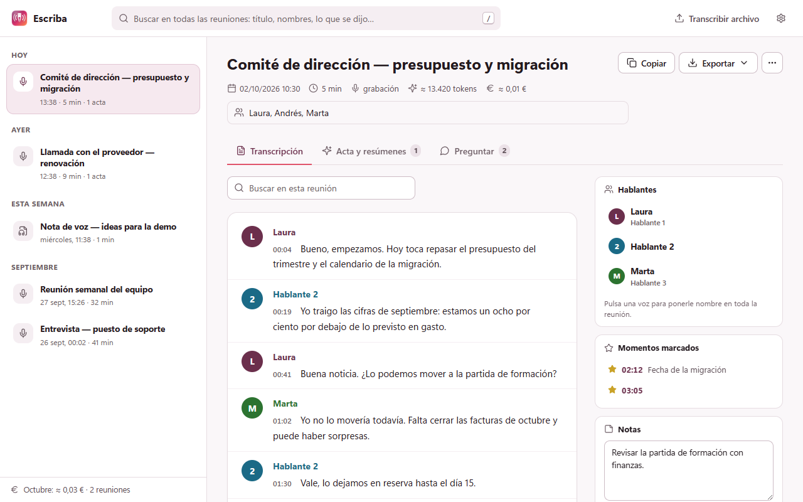
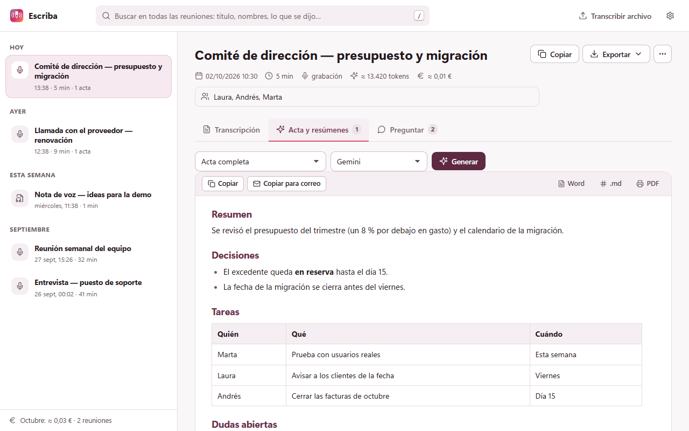
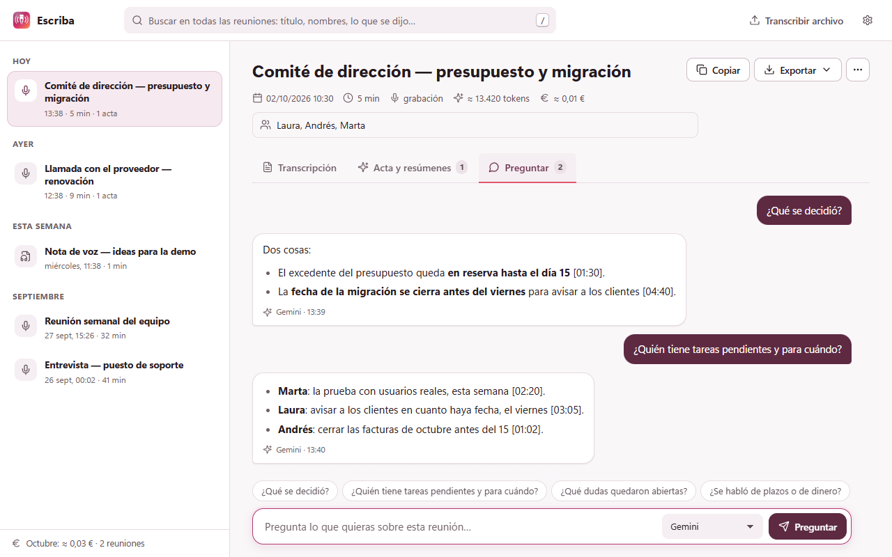
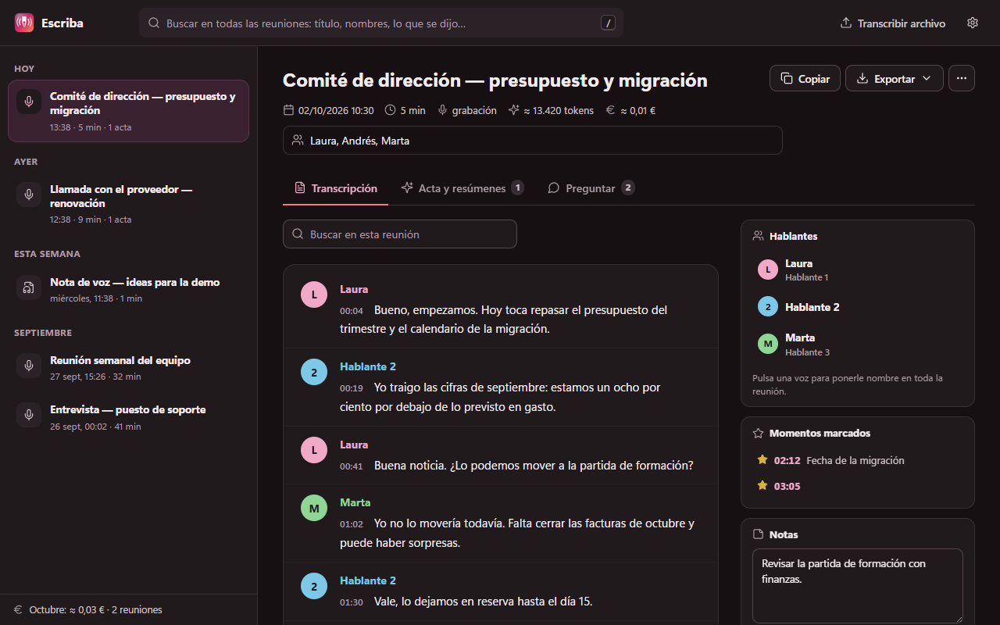

Léela por quién habla
La transcripción llega mientras grabas, agrupada por quién habló y con marcas de tiempo. Pones nombre a cada voz una vez y cambia en toda la reunión.

El acta, con un clic
Acta completa, resumen breve, tareas con responsable, correo de seguimiento o tu propia plantilla, con Gemini, GPT o Claude. Exporta a Word, PDF o SRT.

Pregúntale a la reunión
«¿Qué se decidió?» «¿Quién tiene tareas pendientes?» Responde con lo que se dijo y cita el minuto.

Claro u oscuro, como prefieras
Modo oscuro que sigue a tu sistema, una biblioteca ordenada con todas tus reuniones agrupadas por día y búsqueda en todo lo que se dijo.

Privada desde el diseño
- Sin servidor: el audio va de tu navegador al proveedor de IA que eliges, con tu clave.
- Sin telemetría, sin analítica, sin cuentas. El desarrollador no puede ver tus datos.
- No se pierde nada: tramos de 5 minutos, el audio se queda en tu navegador hasta que está transcrito, reintentos automáticos y recuperación si Chrome se cierra.
Preguntas
¿De verdad es gratis?
Sí. Escriba no cuesta nada. Solo pagas a tu proveedor de IA lo que uses, y la capa gratuita de Gemini sobra para las reuniones del día a día.
¿Qué necesito?
Chrome y una clave gratuita de Gemini de aistudio.google.com/apikey. Las de GPT o Claude son opcionales, para actas y preguntas.
¿Funciona con Teams de escritorio?
Todavía no: graba las reuniones que van en el navegador (Meet, Teams web, Zoom web, Jitsi…) y las presenciales con el micrófono.
¿En qué idiomas?
La interfaz está en español e inglés, con modo claro y oscuro. Las reuniones pueden ser en cualquier idioma que entienda Gemini, incluso mezclados.